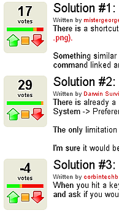

Ubuntu Brainstorm
Archivierte Anleitung
Dieser Artikel wurde archiviert, da er - oder Teile daraus - nur noch unter einer älteren Ubuntu-Version nutzbar ist. Diese Anleitung wird vom Wiki-Team weder auf Richtigkeit überprüft noch anderweitig gepflegt. Zusätzlich wurde der Artikel für weitere Änderungen gesperrt.
Anmerkung: Die Webseite zu Ubuntu Brainstorm wurde im Mai 2013 deaktiviert, eine Meldung mit mehr Informationen ist z.B. bei H-online  zu finden.
zu finden.
Ubuntu Brainstorm ist eine Plattform, auf welcher Ubuntu-Benutzer die Möglichkeit haben, direkten Einfluss auf die Entwicklung von Ubuntu zu nehmen, Wünsche zu äußern, Vorschläge abzugeben und über Lösungsansätze von bestimmten Themen abzustimmen. Sie basiert auf der Plattform Ideatorrent , die aus Ubuntu Brainstorm heraus entwickelt wurde und inzwischen von vielen Projekten genutzt wird.
Brainstorm benutzen¶
Hinweis:
Die folgende Anleitung beschreibt die Vorgehensweise sehr detailliert, um auch Einsteigern die Beteiligung an Ubuntu zu ermöglichen!
Anmeldung¶
Um Ideen veröffentlichen, bewerten oder Lösungen vorschlagen zu können, muss man sich bei Ubuntu Brainstorm anmelden . Nach der Anmeldung bekommt man eine Mail an die angegebene Adresse zugesendet, in der man durch Aufrufen eines Links die Adresse bestätigt. Anschließend wird man zum Eingeben eines Passwortes aufgefordert. Leider ist es (noch) nicht möglich, sich mit einem bestehenden Launchpad-Account einzuloggen.
Ideen veröffentlichen¶
Als eingeloggter User kann man auf der Projektseite eine neue Idee anlegen. Es ist dringend empfehlenswert, mit Hilfe der Suchfunktion auf der Startseite nach existierenden, identischen Ideen zu suchen, um Duplikate zu vermeiden (man wird jedoch bei der Eingabe des Titels darauf aufmerksam gemacht).
Hinweis:
Ubuntu Brainstorm ist nicht gedacht für Fehlermeldungen/Bugreports (--> Launchpad) oder für Wünsche nach neuen Paketen in den Quellen (--> Anleitung im Ubuntu-Wiki ).
Nach der Eingabe eines Titels muss man die benötigten Infos wie eine Beschreibung, Kategorien, Dateianhänge sowie einen Lösungsvorschlag angeben.
Hierbei gelten die gleichen Grundsätze wie z.B. hier im Forum auch. Man sollte sich möglichst präzise, genau, sprachlich richtig, höflich und detailliert ausdrücken, um anderen das Verständnis der Idee leichter zu machen.
Hinweis:
Ubuntu Brainstorm ist bislang nur in englischer Sprache vorhanden, alle Ideen müssen somit in englisch verfasst werden. Wer Probleme beim Schreiben des englischen Textes hat, findet hier im Forum sicherlich Hilfe!

Ideen bewerten¶
Eine der Grundideen von Brainstorm ist es, dass man die Ideen bzw. die Lösungsvorschläge anderer bewerten kann. Dazu existieren auf der linken Seite kleine Felder, mit denen man andere Lösungsvorschläge als positiv oder negativ bewerten kann bzw. sich enthalten kann.
In dem Screenshot links sieht man, dass für diese Idee drei Lösungsvorschläge existieren. Lösungsvorschlag 2 ("Solution #2") hat die meisten Stimmen, während Lösungsvorschlag 3 ("Solution #3") sogar als negativ bewertet wurde, d.h. es fanden ihn mehr Benutzer negativ als positiv.
{kind=link}
Man hat nun die Möglichkeit, durch  -Klick auf die Button jeden Vorschlag als positiv , negativ oder neutral zu bewerten und so die Anzahl der Stimmen für den Lösungsvorschlag zu verändern.
-Klick auf die Button jeden Vorschlag als positiv , negativ oder neutral zu bewerten und so die Anzahl der Stimmen für den Lösungsvorschlag zu verändern.
Kommentare abgeben¶
Eine weitere Funktion ermöglicht die Bewertung der Lösungsvorschläge durch Kommentare. Auf der Ideen-Seite kann man durch Klick auf "Propose your solution" einen Kommentar abgeben. Gut sind hierbei immer Links zu existierenden Threads in Foren wie ubuntuusers.de, ubuntuforums.org oder Links zu existierenden Launchpad-Bugs. Falls man sich mit dem Thema gut/besser auskennt, kann man auch detaillierte Infos dazu geben, wie die Umsetzung dieser Lösung vonstatten gehen soll, z.B. durch Vorschläge zur programmiertechnischen Umsetzung, zum Zeitplan (Ubuntu-Release), zu der allgemeinen Machbarkeit und dem Nutzen der Lösung oder zu technischen Voraussetzungen.
Fortschritte sehen¶
Falls die Idee tatsächlich implementiert/umgesetzt wird, hat man viele Möglichkeiten, das zu erfahren. Zum einen werden die Ideen als "implemented" markiert, zum anderen hat man auf den folgenden Seiten die Möglichkeit, Ubuntu-Infos abzurufen:
Ideas in Development
Hier werden Brainstorm-Ideen angezeigt, an denen aktuell gearbeitet wirdImplemented Ideas
Hier werden bereits implementierte/umgesetzte Brainstorm-Ideen angezeigtUbuntu-Planet
mit Neuigkeiten aus den Entwickler-BlogsUbuntu-Fridge
Neuigkeiten aus der Ubuntu-WeltIkhaya
 von ubuntuusers.de, eine Plattform mit aktuellen Ubuntu-News
von ubuntuusers.de, eine Plattform mit aktuellen Ubuntu-NewsPlanet
von ubuntuusers.de mit News von deutschen Ubuntu-Entwickler-Blogs
Hinweis:
Nur weil eine Idee viel Unterstützung hat, heißt das noch lange nicht, dass sie auch umgesetzt/implementiert wird. Canonical (verantwortlich für Ubuntu und somit auch für Ubuntu Brainstorm) entwickelt keine Software, sondern Software wird eher von großen Software-Projekten wie GNOME/KDE/Samba/X.org usw. entwickelt. Diese sammeln jedoch auch ihre eigenen Ideen (z.B. KDE-Brainstorm ).
Jedoch sollte man sich nicht entmutigen lassen, seine Ideen und Vorschläge zu veröffentlichen!
Umsetzung einer Idee¶
Von der Veröffentlichung der Idee bis zur Veröffentlichung des Programms/der Lösung ist es ein langer Weg. Anhand des Beispiels der (erfolgreich umgesetzten) Idee 16 wird hier der traditionelle Verlauf vorgestellt:
Am 28. Februar 2008 um 14:35 veröffentlichte der User Taku seine Idee, dass Ubuntu eine LiveUSB-Version brauche, um Ubuntu portabel auf einem USB-Stick mitnehmen zu können.
Sein Idee wurde 4328 mal positiv bewertet, die zweite verfügbare Lösung (Benutzen der Slax-LiveUSB-Version) fand keinen Zuspruch. 77 Kommentare wurden abgegeben. Die Idee hatte insgesamt 38 Duplikate, jedes hatte davon durchschnittlich 62,6 Kommentare (insgesamt also 2142 Kommentare).
zwei Projekte nahmen sich der Sache an, wie ein Entwickler im "Developer comment" vorstellte:
This was implemented by two separate projects! Both Usb-creator (see the Blueprint ) and Usblive (see its website ) allow you to build a live USB system on Intrepid.
The first one is available on the repository, and usblive in this PPA .
Dieses wurde von zwei verschiedenen Projekten umgesetzt. Sowohl Usb-Creator (siehe Blueprint ) und Usblive (siehe Website ) ermöglichen das Erstellen eines Live-USB-Systems in Intrepid. Das erste ist im Reposity verfügbar und UsbLive in diesem PPA .
Am 16 September 2008 wurde die Idee 16
als umgesetzt markiert.
Links¶
Andere Möglichkeiten, sich aktiv in die Ubuntu-Entwicklung einzubringen
Ubuntu Brainstorm Bericht
von Ubuntu 8.10 Intrepid IbexLinuxloop
fasst sehenswerte Brainstorm-Ideen zusammen
- Erstellt mit Inyoka
-
 2004 – 2017 ubuntuusers.de • Einige Rechte vorbehalten
2004 – 2017 ubuntuusers.de • Einige Rechte vorbehalten
Lizenz • Kontakt • Datenschutz • Impressum • Serverstatus -
Serverhousing gespendet von